前往定制 4.x 版本
图表chart
选择要打包的图表（注：开发环境建议不压缩代码，代码压缩会去掉大部分常见的警告和错误提示）
- 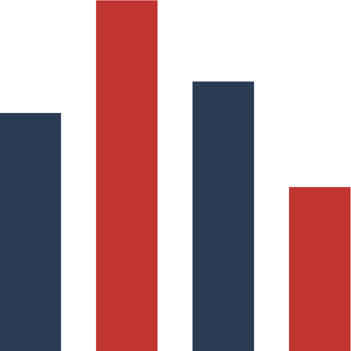
柱状图
Bar 
折线图
Line
饼图
Pie
散点图
Scatter- 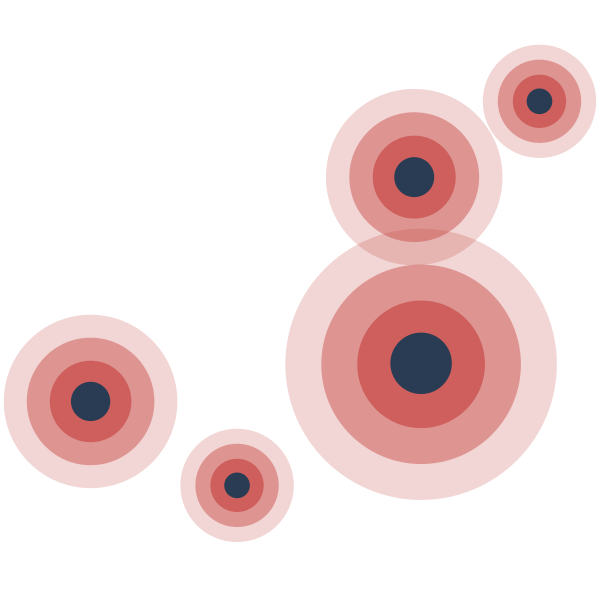
涟漪散点图
EffectScatter 
K线图
Candlestick- 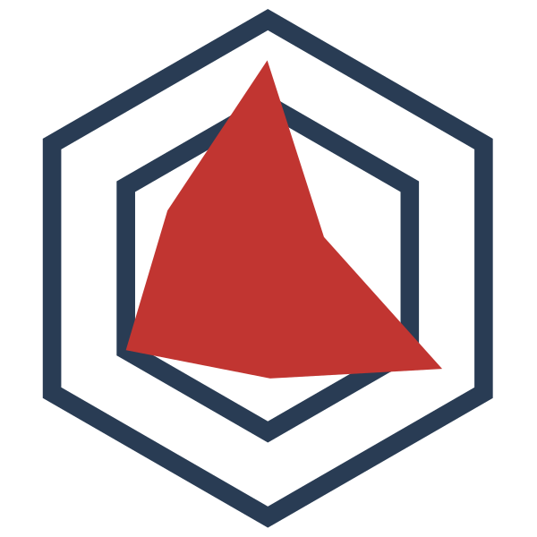
雷达图
Radar - 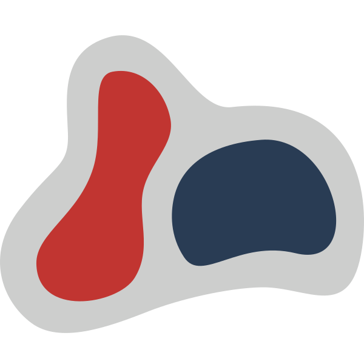
热力图
Heatmap 
树图
Tree- 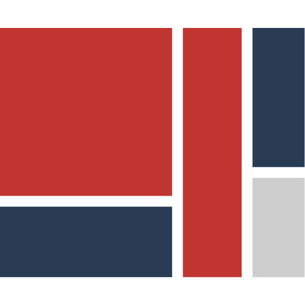
矩形树图
Treemap - 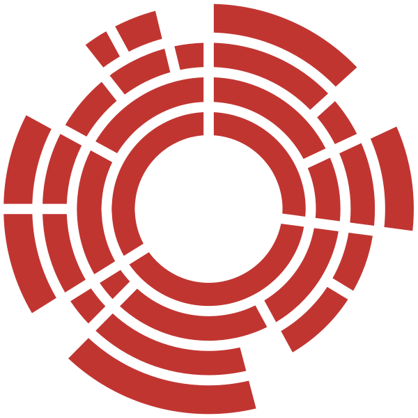
旭日图
Sunburst 
地图
Map
线图
Lines- 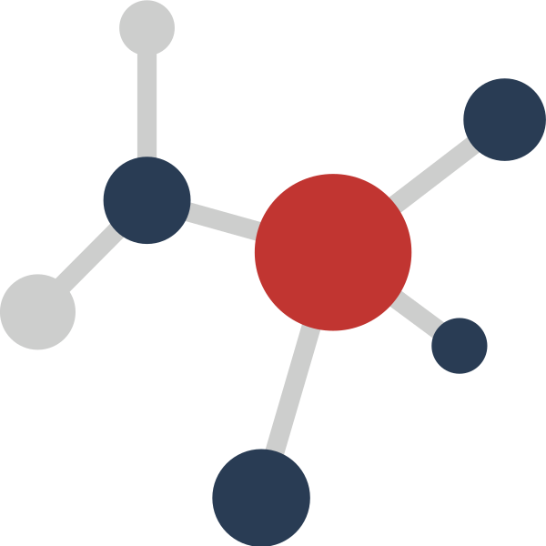
关系图
Graph 
箱线图
Boxplot
平行坐标
Parallel
仪表盘
Gauge- 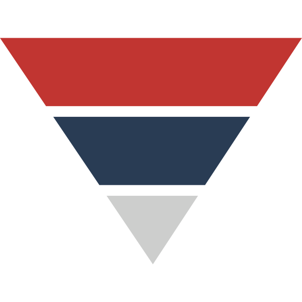
漏斗图
Funnel 
桑基图
Sankey
主题河流图
ThemeRiver
象形柱图
PictorialBar
自定义系列
Custom
坐标系coordinate systems
选择要打包的坐标系，有些图表像散点图，折线图可以被应用到多个坐标系上

直角坐标系
Grid
极坐标系
Polar
地理坐标系
Geo
单轴
SingleAxis
日历
Calendar
组件component
选择要打包的组件

标题
Title
图例
Legend- 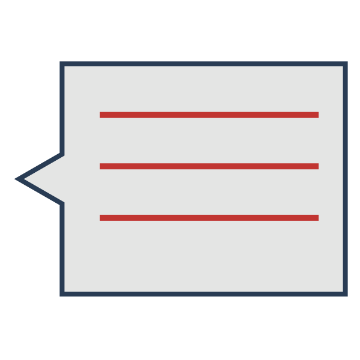
提示框
Tooltip 
标注
MarkPoint
标线
MarkLine- 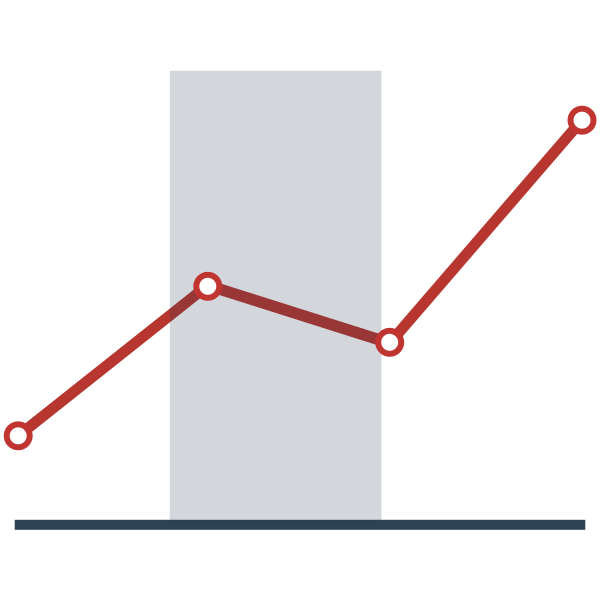
标域
MarkArea 
时间轴
Timeline
数据区域缩放
DataZoom- 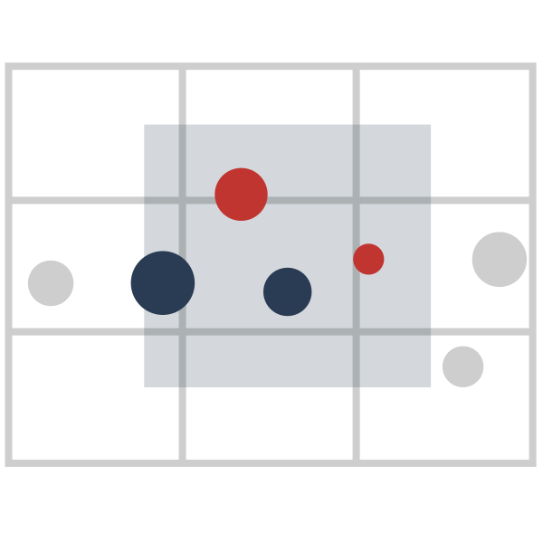
刷选
Brush - 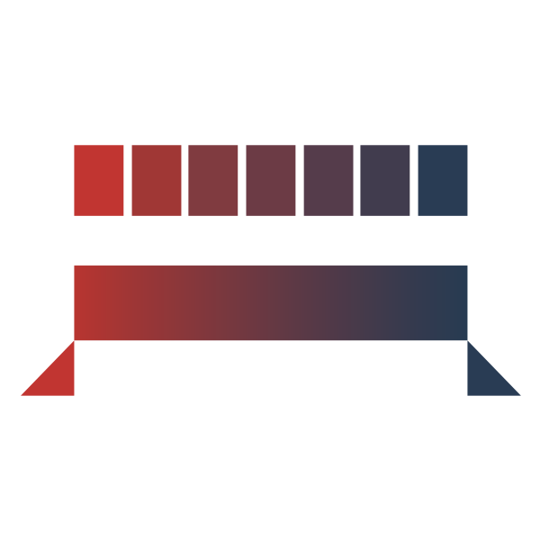
视觉映射
VisualMap 
工具栏
Toolbox自定义图形
Graphic
其它选项others
是否包括 SVG 渲染器，从而能支持使用 SVG 来绘制图表
是否包括对 IE8 的兼容代码
是否在 echarts 对象上挂载常用工具集。一般都会挂载，除非对生成的文件的体积有苛求，并且不需要用这些工具集。
是否使用 UglifyJS 压缩后的代码，开发环境建议不压缩代码，代码压缩会去掉大部分常见的警告和错误提示。
感谢对ECharts关注与支持，为了更好地为您提供关于 ECharts 的相关资讯，您可以留下您的电子邮箱
下载